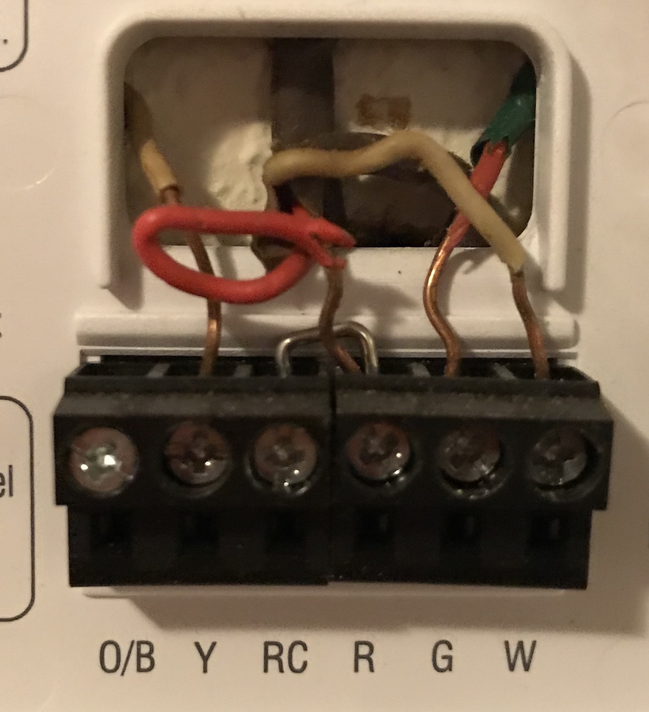
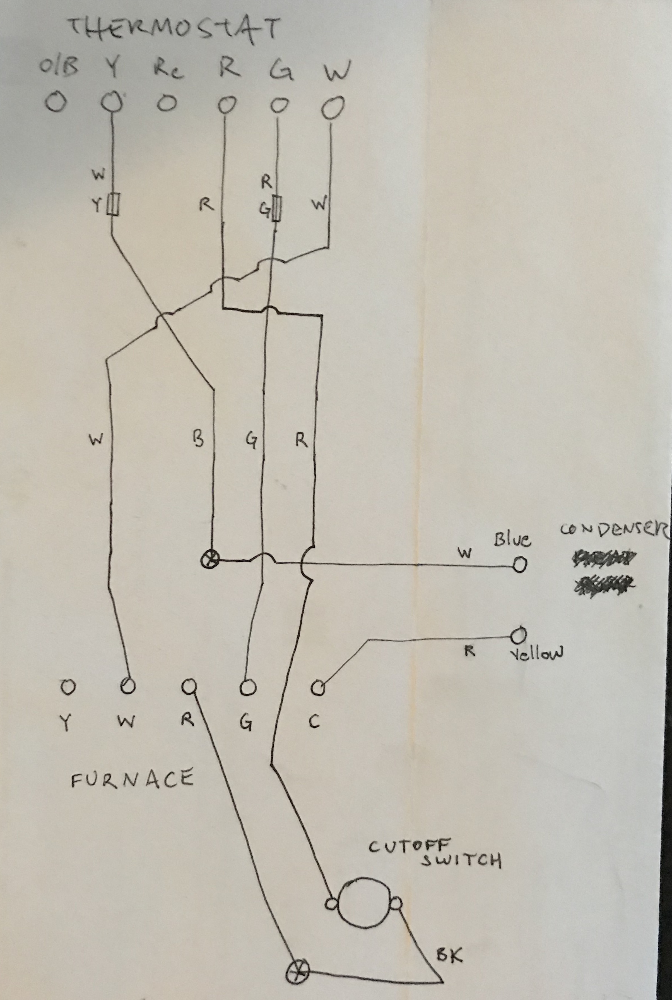
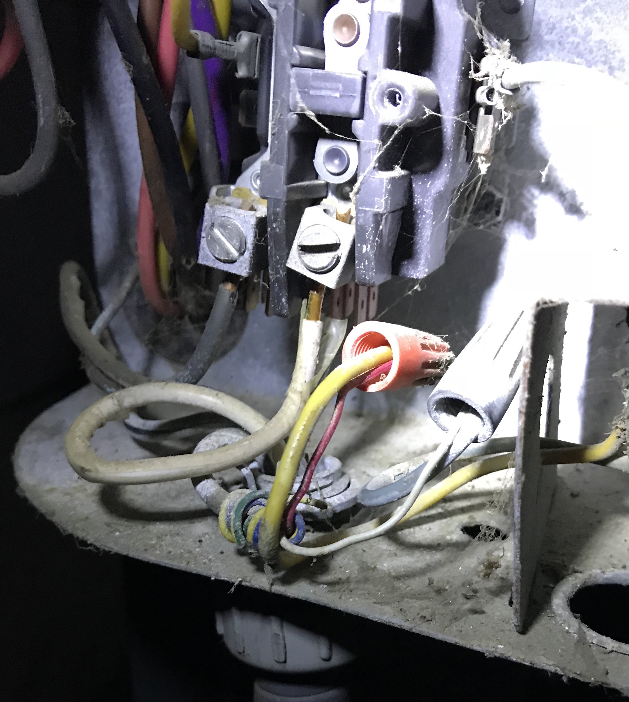
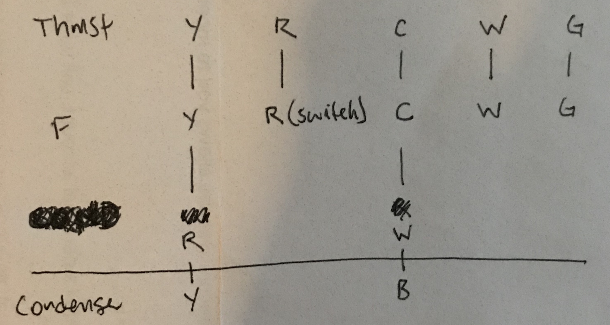

In many cases rewiring your system to allow installation of a smart thermostat isn't necessary. When
would it be necessary?
There are (unfortunately)
multiple types of air conditioners, each with different wiring schemes. Because I'm not an A/C technician
we'll focus on the type I successfully rewired. A "single stage" system - one thermostat, one air handler, and one
condenser. The system can call for cooling, heating, or unconditioned air ("fan only").
Old thermostats were often run off of batteries stored in the back of the thermostat unit. The thermostat would
not draw
power from the rest of the air conditioning system. Many smart thermostats, however, require constant power from the
rest of the system in order for the thermostat to remain online and connected to your wireless network
(to enable all of those cool "smart" functions).
That's where rewiring may be necessary - if your existing thermostat wiring does not include a "common" or "C-wire"
you may need to locate or add one a C-wire, because the C-wire is what allows your thermostat to draw constant
power in order to stay online.
Locating or adding a common (or "C") wire
In some cases, your thermostat wiring may include a C-wire that was just stuffed into the hole in the wall
behind your thermostat. Typically the C-wire is blue in color.
If you check and do not have any spare wires, or your spare wires are not blue, you can do some additional
legwork in order to find out whether you have a C-wire available. This is what I had - two sets of red & white
wires:

Locate and open up your air handler
Flip the breaker (or the sometimes available power switch near the air handler itself)
to power off your air handler.
Search the area for the thermostat wiring going into the air handler, and locate the removable
panel that will expose the interior wiring of the air handler. We're looking for the termination point of your thermostat
wiring.
Map out the existing wiring of your air handler
Take note of the termination point for each of your thermostat wires, by color.
Here's an example of the existing (non-updated) thermostat wiring terminating on an air handler
logic board:
If you look closely you can see partially obstructed black markings on the logic board
that indicate the expected wiring colors:
- Y - yellow
- W - white
- R - red
- G - green
- C - cyan/blue
It's probably immediately obvious, though - almost none of the colors match up!
In order to better understand the existing wiring (which was working properly) I drew up a wiring
diagram:

Starting at the top, you'll see the thermostat wiring (two sets of red/white wires) does not match the color
scheme pictured at the air handler? How is that possible? After some digging around in the attic space,
I discovered the wiring had been spliced - this is also represented in the wiring diagram.
Let's trace each wire from end to end to clarify, starting at the thermostat:
- Thermostat (Y) → white wire (with Y-yellow electric tape) → attic splice (B) blue wire →
(W) white wire on the condenser line, in the air handler enclosure → Condenser (B)
- Thermostat (R) → red wire → attic splice (R) red wire → black wire that routed inside
the air handler to a cutoff switch and then back to the air handler logic board
→ air handler logic board termination (R)
- Thermostat (G) → red wire (with G-green electric tape) → attic splice (G) green wire →
air handler logic board termination (G)
- Thermostat (W) → white wire → attic splice (W) white white →
air handler logic board termination (W)
This covers almost all of the wires in the diagram - we're just missing the path of the other condenser wire shown.
- Air handler (C) → red wire on the condenser line, in the air handler enclosure → Condenser (Y)
Here's a picture of that head-scratcher splice which I discovered buried in the attic insulation somewhere between the
thermostat
and the air handler:
You can see the two sets of red/white on the top, and the B/G/R/W colors on the bottom. I carefully took the splice apart
to determine how each color connection was matched.
Can you use existing wiring?
Great, now you've mapped the system's wiring. Hopefully your system's wiring was much simpler than the above example.
You can use your existing wiring if you were able to locate or identify a C-wire, which would typically be connected to
the (C)
termination point on your air handler's logic board. In total, you'll need 5 wires connecting your thermostat to your
air handler:
- Y: yellow, calls for cooling, connecting thermostat (Y) → air handler (Y) ( and then on to the condenser (Y))
- R: red, power/hot, connecting thermostat (R) → air handler (R)
- G: green, calls for fan, connecting thermostat (G) → air handler (G)
- W: white, calls for heat, connecting thermostat (W) → air handler (W)
- C: blue, allows for constant power to flow through the (R)/power/hot , connecting thermostat (C) → air handler
(C)
I noticed that when moving/pulling the spliced wires in my attic, the air handler would power off and on,
indicating there was a bad splice or short in the line.
Based on the complexity of my wiring setup, and this problematic splice, I decided it would be easier to run a new
thermostat wire between my thermostat and my air handler to "start fresh".
Running new thermostat wire
I went down to my local hardware store to buy a rough estimated length of 5-strand thermostat wire. 25 feet of the
wire cost me about $12. Measure the distance between the thermostat and air handler - don't forget to account for wall height!
To run the wire I simply tied off the end of the new thermostat wire on the existing wire coming out of the wall
where the thermostat hung. From the attic space, I pulled up the old wire, and the new wire came along with it. I then cut off
the old wire, and fished the new wire down into the existing hole in the ceiling of the air handler closet.
Rewiring the system
From there, wiring both ends was much easier - no splices, and no color mapping. I just matched up the new wire color with
the air handler logic board's color markings, and the new thermostat's color markings (Y/R/G/W/C).
The only remaining challenge was properly wiring in the condenser - the condenser wire (in my case, a 2-strand wire
with red/white) and thermostat wire each terminate in the air handler enclosure, at the air handler logic board (as you
saw above).
I traced the 2-strand red/white wire from the air handler to the condenser. To ensure I was terminating the wires
properly in the air handler, I turned off the condenser's breaker (this is super important - 240V!), and opened up
the condenser enclosure. The condenser red/white wires were connected to yellow/blue wires:

That covers everything - so, here's a diagram of how I wired in the newly run thermostat wire and the existing condenser
wire:

Here's a picture of the newly wired air handler (again, the board's terminations are in this order: YWRGC):
You can see the red wire from the condenser wired in to the (Y) termination, and the white wire from the condenser
wired in to the (C) termination. You also see the red wire from the thermostat running through the black wires of
the cutoff switch, and then into the (R) termination.
Here's a closer shot showing the terminations: